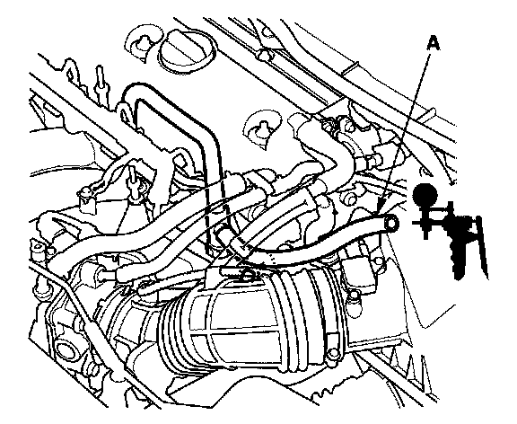

Auxiliary Air Valve (Idle Speed): Testing and Inspection
Intake Air Bypass Control Thermal Valve TestSpecial Tools Required
Vacuum pump/gauge, 0-30 in.Hg, Snap-on YA4000A or equivalent, commercially available
1. Start the engine, and let it idle.
NOTE: Engine coolant temperature must be below 149 °F (65 °C).
2. Remove the intake manifold cover.

3. Remove the vacuum hose (A) from the air intake duct, and connect a vacuum pump/gauge, 0-30 in.Hg, to the hose.
4. Raise and lower the engine speed, and make sure the vacuum gauge reading changes as the engine speed changes.
If the vacuum reading does not change, check for these problems:
- Misrouted, leaking, broken, or clogged intake air bypass control system vacuum lines.
- A cracked or damaged intake air bypass control thermal valve. Replace the valve if needed.
5. Hold the engine speed at 3,000 rpm without load (in neutral) until the radiator fan comes on, then let it idle.
6. Raise and lower the engine speed, and make sure the vacuum gauge reading does not change as the rpm changes.
If the vacuum reading changes, check for these problems:
- Misrouted, leaking, broken, or clogged intake air bypass control system vacuum lines.
- A cracked or damaged intake air bypass control thermal valve. Replace the valve if needed.